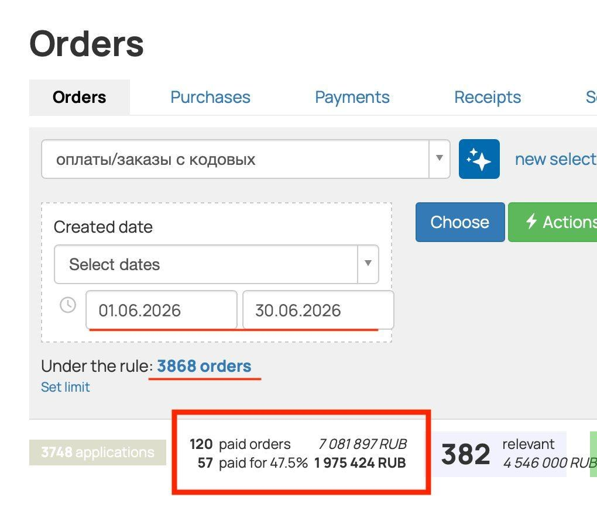
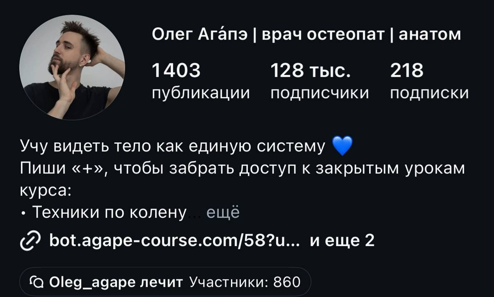
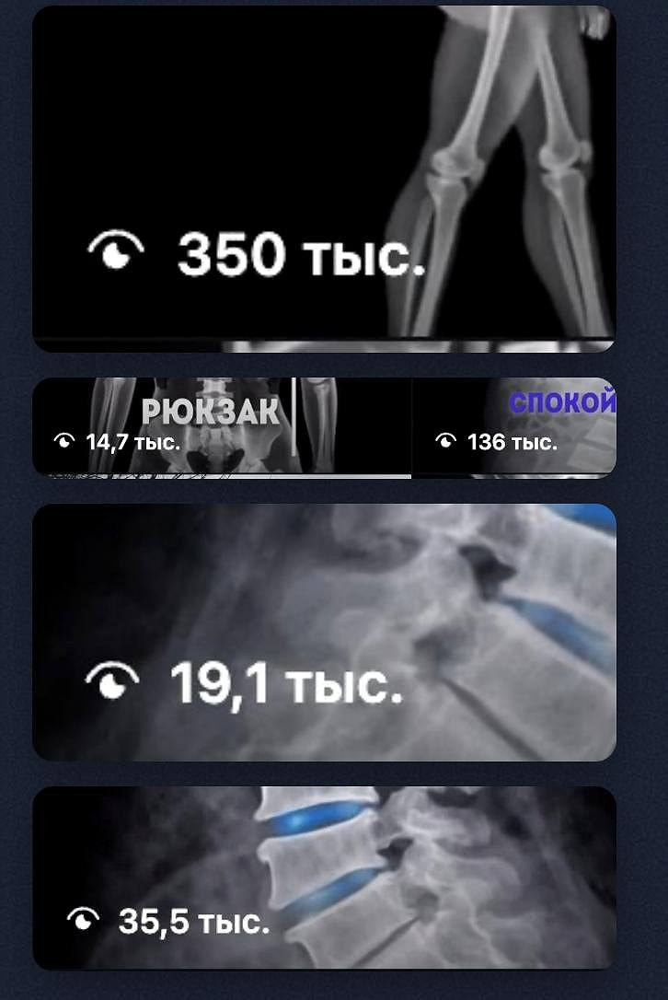

Если ты дизайнер, монтажёр, таргетолог или мобилограф, дальше будет неприятно. Потом будет полезно: во второй половине лежит инструкция по каруселям с готовым промптом, её можно применить сегодня.
Сначала про тебя
Сорок тысяч, ночи и «поиграй со шрифтами»
Ты берёшь заказ за 3-8 тысяч. Делаешь за день. Получаешь правки. Делаешь ещё раз. Получаешь «а давай вернём как было». В хороший месяц выходит 40-60 тысяч, в плохой ты сидишь и обновляешь биржу.
Дальше арифметика, которая мало кому нравится. Чтобы заработать 150 тысяч на такой модели, тебе нужно в три раза больше заказов. Это в три раза больше правок, звонков и ночей. Времени в сутках столько же, поэтому реальный потолок у тебя где-то на сотке. Ты его чувствуешь и без калькулятора.
Теперь неприятная часть. Нейросети уже режут этот рынок снизу: клиент сам генерит картинку, сам пишет текст, сам собирает ролик. Заказов на «сделай красиво» становится меньше, а исполнителей больше. Через год ты будешь делать ту же работу за меньшие деньги и с большей конкуренцией.
Выход есть, и он не в том, чтобы работать быстрее. Надо поменять то, что ты продаёшь.
Что продавать вместо задач
Контент-завод. Ты собираешь бизнесу систему, которая производит контент постоянно: где брать темы, как их превращать в карусели и ролики, по каким шаблонам, с какой частотой. Один раз платят за сборку, дальше платят каждый месяц за то, что система работает.
Задача
Продал макет. Получил 5 тысяч и три круга правок. Завтра ищешь следующий заказ.
Система
Продал контент-завод. Получил от 100 тысяч за сборку и ежемесячную оплату за ведение. Клиент не уходит, потому что система его кормит.
Собрать такую услугу с нуля за 5 уроков
Бесплатный тест-драйв: что продавать бизнесу на нейросетях, за сколько и где брать первых клиентов. Первую работу собираешь руками прямо внутри.
Забрать тест-драйв бесплатно
Доступ сразу · 48 часов на прохождение · разбор с наставником в конце
Доказательство
Июнь: 3868 заказов и 1 975 424 ₽ у одного клиента
Александру 24. После университета его никуда не брали без опыта, поэтому он ушёл на фриланс: карточки для маркетплейсов, монтаж, съёмка на телефон, ведение соцсетей. Тот самый потолок в сотку. Год назад он собрал первый контент-завод. Ниже отчёты из проекта, который он ведёт сейчас.
панель заказов клиента, июнь 2026

Выборка с 1 по 30 июня: 3868 заказов и 3748 обращений. В красной рамке оплаты по этой выборке: 57 штук на 1 975 424 ₽. Это результат одного месяца работы системы
блог клиента

Клиент это врач-остеопат, который ведёт блог и продаёт обучение для телесных специалистов. 1403 публикации, 128 тысяч подписчиков. Около 25 тысяч из них пришли за несколько месяцев работы контент-завода
охваты отдельных публикаций

350 тысяч, 136 тысяч, 35,5 тысячи просмотров. Миллионы набираются вот такими единицами: система выпускает контент регулярно, часть попадает в охваты, часть нет
Ключевая мысль этого кейса: заявки принёс не гениальный пост. Их принёс объём и повторяемость. Главным форматом в проекте стали карусели, поэтому дальше разбираю именно их, по шагам и с примерами.
Инструкция
Карусель, которая приносит заявки: 7 шагов
1
Тему бери из переписки клиента
Открой комментарии, директ и отзывы. Выпиши двадцать вопросов, которые повторяются, дословно, словами клиентов. Это твой список тем на месяц вперёд. У остеопата такие вопросы звучат так: «почему после сна болит шея», «можно ли греть поясницу», «сколько нужно сеансов». Каждый из них закрывается одной каруселью. Придуманные за столом темы вроде «10 фактов о позвоночнике» не работают, потому что их никто не спрашивал.
2
Первый слайд решает судьбу всей карусели
Работает конкретика: цифра, ошибка, неожиданная связка. Сравни. «Как сохранить здоровье спины» пролистывают. «3 привычки, из-за которых шея болит по утрам» открывают, потому что читатель узнал свою ситуацию. «Полезные упражнения для поясницы» проходит мимо. «Упражнение, которое советуют в каждом видео и которое добивает поясницу» останавливает. Правило простое: в хуке должен быть либо счёт, либо ошибка, либо конфликт с тем, что человек уже слышал. Длина до двух строк, потому что читают с телефона на ходу.
3
Одна карусель равна одной мысли
Скелет: хук, от двух до семи слайдов раскрытия, слайд с призывом, последний дожимающий. На слайде помещается два предложения или список из трёх пунктов, больше человек не читает. Как только на слайде появляется вторая мысль, палец идёт дальше. Если тема не влезает, это не длинная карусель, это две разные карусели.
4
Каждый слайд заканчивается причиной листнуть
Незакрытый вопрос, начало перечисления, обещание следующего пункта. Нумерация «1 из 7» работает сама по себе: человек видит конец и хочет дойти. Провисает всегда середина, на четвёртом-пятом слайде. Поэтому самый сильный аргумент ставь именно туда. Проверка: закрой любой слайд рукой и спроси, захочется ли листать дальше без него.
5
Промпт вместо «напиши карусель»
Модель выдаёт воду, когда ей не задали рамку. Рамка это аудитория, вопрос, количество слайдов, тон и запреты. Ниже готовый промпт, подставь своё и копируй.
Шаг 5 · можно копироватьТы пишешь карусель для блога [кто клиент и что продаёт]. Аудитория: [кто читает, что уже пробовал, чего боится]. Закрываем один вопрос: «[вопрос дословно из комментариев]». Формат: 8 слайдов. Первый хук, слайды 2-6 раскрытие, слайд 7 призыв, слайд 8 дожим. Правила: одна мысль на слайд, максимум два предложения или три пункта списка, разговорный тон на «ты», без канцелярита и без общих фраз вроде «в современном мире». Каждый слайд должен заканчиваться так, чтобы хотелось листнуть дальше. Сначала выдай 5 вариантов хука с цифрой или ошибкой внутри, я выберу один. После моего выбора напиши остальные слайды.
6
Дизайн собирается один раз
Нужен шаблон. Отдельная красота под каждый пост съедает всё время, ради которого ты и затевал эту услугу. Один шрифт заголовков, один текстовый, два цвета плюс акцент. Формат вертикальный 1080 на 1350, поля от 80 пикселей, кегль заголовка от 60. Проверка занимает секунду: уменьши слайд до размера ногтя, заголовок обязан читаться. Когда шаблон готов, выпуск карусели занимает двадцать минут, и именно поэтому услуга превращается в систему и перестаёт быть бесконечной работой руками.
7
Одно действие в конце, не два
Предпоследний слайд говорит, что сделать прямо сейчас: написать слово в директ, забрать гайд, прийти на разбор. Последний коротко напоминает, что человек теряет, если пролистнёт и забудет. Два разных действия в одной карусели убивают оба: читатель выбирает между ними и не делает ничего.
Хук про всё сразу
Чем шире обещание, тем меньше дочитываний. Узкая тема бьёт точнее.
Мелкий текст
Слайд читают одной рукой в метро. Не читается с ногтя, значит не читается вообще.
Дизайн вперёд смысла
Сначала текст по слайдам, потом оформление. Наоборот выходит красивая пустота.
Финал без действия
Досмотрел, кивнул, ушёл. Заявки не случилось, работа сделана впустую.
Сделать первую карусель под присмотром
Инструкция выше рабочая, но первый раз всегда быстрее с человеком рядом. На тест-драйве собираешь работу и сразу понимаешь, кому её продавать и за сколько.
Забрать тест-драйв бесплатно
5 уроков · практика руками · без вложений
Деньги
Откуда берутся 200 тысяч в месяц
от 100 000 ₽
разовая сборка завода: темы, форматы, шаблоны, процесс выпуска
ежемесячно
сопровождение: система дорабатывается под то, что зашло, и то, что нет
×несколько
проекты идут параллельно, потому что шаблон и процесс уже собраны
рекомендации
после первого результата зовут дальше. Александра так позвал даже боксёрский зал в Тбилиси
Вторая часть клиентов приходит через ИИ-агента для поиска заказов, которого мы даём на наставничестве. Он вылавливает из чатов сообщения, где бизнес ищет то, что ты умеешь.
Возражения
Что спрашивают чаще всего
Я совсем с нуля
Александр половину вещей собирал впервые. Опыт не нужен, нужна готовность идти по шагам: инструкции, шаблоны и помощь с первым клиентом есть.
Я не дизайнер
Дизайн в этой услуге это один раз собранный шаблон. Дальше меняются только текст и картинка.
Там конкуренция
На тестовое по дизайну он бился с десятью такими же. На контент-заводах коллег почти не встречает: приносит пример, ставит цену чуть ниже рынка, диалог закрывается в оплату.
Уже поздно
Спрос только формируется, специалистов мало. Сейчас рынок в этой услуге на стороне исполнителя.
Где первый клиент
Он приходит на встречу с готовым демо. До вопроса про опыт разговор обычно не доходит.
Это сложно
Код писать не нужно. Текст и картинки делает нейросеть, сборка идёт в конструкторах.
Год спустя
Что изменилось у Александра

Александр, 24 года
Год назад: дизайн и монтаж по ночам, 40 тысяч в хороший месяц
Толчком стала девушка, с которой он познакомился в Москве и понял, что подкатывать с пустыми карманами не хочется. Теперь они вместе и живут в Москве, летом он впервые выехал за границу просто отдохнуть. Его совет тем, кто сейчас там же: хватит продавать свои ночи за бесконечные правки.
от 100кчек за сборку
от 200кв месяц сейчас
несколькопроектов параллельно
Пройти тот же путь с начала
Пять уроков: как устроен рынок ИИ-услуг, за что платят, как собрать первую работу и где брать клиентов. В конце личный разбор твоей ситуации с наставником.
Забрать тест-драйв бесплатно
Доступ открывается сразу · 48 часов на прохождение · без вложений